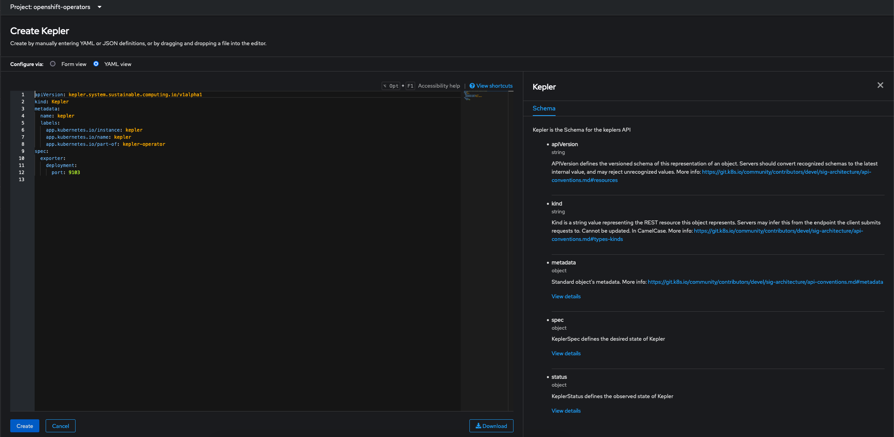

Kepler Community Operator on OpenShift
Requirements
Before you start make sure you have:
- An OCP 4.13 or above cluster running
- Signed in as
kubeadminor a user withcluster-adminrole ocinstalled.-
Clone the kepler-operator repository.
git clone https://github.com/sustainable-computing-io/kepler-operator.git cd kepler-operator
Remove previously installed version of the Kepler Community Operator
If you have previously installed the Kepler Community Operator this will need
to be removed prior to the installation of the v0.8.z version or above of the operator.
This is due to changes to the Kepler API that are backward incompatible.
Please also note that v1alpha1 does not promise backward compatibility and backward incompatible changes
are expected until the API matures to v1beta1.
To remove the Kepler Operator use the Uninstall Operator Script in the Kepler-Operator repo
-
Run the uninstallation script to check the installed version of the operator
./hack/uninstall-operator.shSample output of the command
🔔 No operator version specified; finding the installed version ✅ found kepler-operator csv: clusterserviceversion.operators.coreos.com/kepler-operator.v0.8.1 ✅ kepler-operator version: v0.8.1 ✅ Found - Kepler Operator version: v0.8.1 🔆🔆🔆 Resources of Kepler Operator - v0.8.1 🔆🔆🔆 ━━━━━━━━━━━━━━━━━━━━━━━━━━━━━━━━━━━━━━━━━━━━━━━━━━━━━━━━━━━━━ NAME DISPLAY VERSION REPLACES PHASE kepler-operator.v0.8.1 Kepler 0.8.1 kepler-operator.v0.8.0 Succeeded 🔆🔆🔆 Going to delete the following 🔆🔆🔆 â”â”â”â”â”â”â”â”â”â”â”â”â”â”â”â”â”â”â”â”â”â”â”â”â”â”â”â”â”â”â”â”â”â”â”â”â”â”â”â”â”â”â”â”â”â”â”â”â”â”â”â”┠⯠kubectl get ns kepler Error from server (NotFound): namespaces "kepler" not found ⯠kubectl get kepler -A NAME PORT DESIRED CURRENT READY UP-TO-DATE AVAILABLE AGE kepler 9103 17 17 17 17 17 12h ⯠kubectl get -n openshift-operators olm -l operators.coreos.com/kepler-operator.openshift-operators= NAME AGE operatorcondition.operators.coreos.com/kepler-operator.v0.8.1 12h .... â”â”â”â”â”â”â”â”â”â”â”â”â”â”â”â”â”â”â”â”â”â”â”â”â”â”â”â”â”â”â”â”â”â”â”â”â”â”â”â”â”â”â”â”â”â”â”â”â”┠🔔 To delete all resources listed above, rerun with the `--delete` option added.  ./hack/uninstall-operator.sh --delete -
Once the above is verified, uninstall the operator and all the related resources by specifying the --delete flag.
./hack/uninstall-operator.sh --delete
Install Kepler Community Operator from Operator Hub
-
Go to Operators ⯠Operator Hub. Search for
Kepler. Click on Kepler Operator tile, then selectContinueand thenInstall
-
Choose
alphachannel to deploy thelatestversion of the Operator.From OCP 4.15 onwards operator can be installed on Namespaces other than
openshift-operators -
Click on
Install -
Wait until Operator gets installed
Follow the
View Operatorlink to view installed Operators inopenshift-operatorsNamespace or use the UI to navigate to installed operators and select the Kepler Operator. -
Select
Create instanceto Create a Custom Resource for Kepler -
There is a
FormandYAMLview, using the YAML view provides more detail.

-
Once Kepler is configured select
Create. -
Check that the Kepler is deployed and available
oc get kepler keplerNAME PORT DESIRED CURRENT READY UP-TO-DATE AVAILABLE AGE kepler 9103 6 6 6 6 6 33s
Kepler Dashboard
The Kepler Dashboard provides the ability to visualize data exported by Kepler thus facilitating data-driven insights and a clear and interactive overview of metrics. Currently, we can visualize Kepler related metrics either via deploying Grafana dashboard on OpenShift or directly via OpenShift Console.
OpenShift Console
To view the metrics directly from OpenShift Console
- Configure user workload monitoring on the cluster. Refer to the official OpenShift documentation for more information.
- Navigate to Observe ⯠Dashboard
- To view overall power consumption select
Power Monitoring / Overviewfrom the dropdown. - To view the power consumption by namespace select
Power Monitoring / Namespacefrom the dropdown.
Deploy the Grafana Dashboard
The Kepler dashboard can be installed using the deploy grafana script in the kepler-operator repo
-
Run the Grafana deployment script
./hack/dashboard/openshift/deploy-grafana.sh
The script takes a few minutes to complete. The script automates the following steps:
- Setup OpenShift User Workload Monitoring.
- Install the Grafana Community Operator inside
kepler-grafananamespace - Setup Grafana related dependencies e.g. ServiceAccount, Grafana DataSource, Grafana Dashboard and Route
When the script successfully completes it provides the OpenShift Route to the Kepler Dashboard.
🔆🔆🔆 Grafana Dashboard Setup Complete 🔆🔆🔆
━━━━━━━━━━━━━━━━━━━━━━━━━━━━━━━━━━━━━━━━━━━━━━━━━━━━━━━━
📈 Grafana Configuration:
Dashboard URL: https://grafana-route-kepler-grafana.apps.devcluster.openshift.com/login
Admin: kepler
Password: kepler
━━━━━━━━━━━━━━━━━━━━━━━━━━━━━━━━━━━━━━━━━━━━━━━━━━━━━━━
🔔 Kepler use prometheus deployed in openshift-user-workload-monitoring to store metrics. To configure Prometheus to cater to needs of the cluster such as:
* Increase data retention for in-depth analysis
* Allocate more resources based on requirements
💡 see: https://docs.openshift.com/container-platform/latest/observability/monitoring/configuring-the-monitoring-stack.html#configuring-the-monitoring-stack_configuring-the-monitoring-stack
━━━━━━━━━━━━━━━━━━━━━━━━━━━━━━━━━━━━━━━━━━━━━━━━━━━━━━━
Grafana Dashboard
Sign in to the Grafana dashboard using the credentials kepler:kepler.
Access the Grafana Console Route
The dashboard can also be accessed through the OCP UI, Go to Networking ⯠Routes.

Grafana Deployment Overview
Refer to the Grafana Deployment Overview
{kind=link}

Frequently Asked Questions
Will Kepler work on earlier releases of OpenShift?
Our recommendation is use OCP 4.13 and above, but Kepler can be installed on OCP 4.11
and 4.12. In the future the Operator may be updated to check the version of
Kubernetes that is installed e.g. v1.25.
How do I set nodeSelector and tolerations for Kepler?
You can specify nodeSelector and toleration's for Kepler at the time of creating Instance.
You can specify both in Form and YAML view.
To specify in YAML view:
spec:
exporter:
deployment:
port: 9103
nodeSelector:
foo: bar
tolerations:
- key: foo
operator: "Equal"
value: bar
effect: NoExecute
How do I specify Redfish related configuration?
You can specify Redfish related configuration for Kepler at the time of creating Instance.
You can specify both in Form and YAML view.
To specify in YAML view:
spec:
exporter:
deployment:
port: 9103
tolerations:
- operator: Exists
redfish:
secretRef: redfish-secret
probeInterval: 60s
skipSSLVerify: false
Note
Once an instance is created, the user must manually create redfish secret redfish-secret in the namespace kepler-operator.
Once the secret is created, the operator will reconcile and Kepler will be able to connect to Redfish.
For more information regarding secret content specification refer to the upstream manifest.
Where are Kepler exporter pods deployed?
Once a Kepler Instance is created all related resources like pods, daemonsets, configmaps, secrets etc. are present inside the kepler-operator namespace.
To view the available resources:
oc get all -n kepler-operator